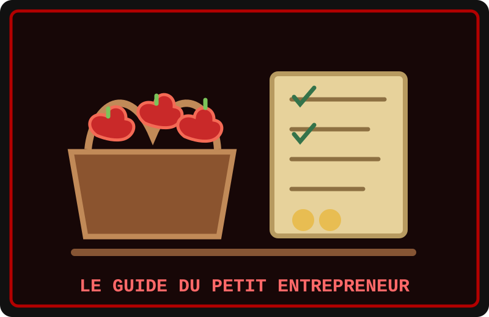

Tu as une idée de projet ? Commence modestement. Mon premier commerce tenait dans un panier de pommes et un carnet. J’ai demandé à mes voisins ce qu’ils aimeraient acheter, puis j’ai calculé mes dépenses avant de fixer un prix.
Les étapes de Mini Castor
- Écoute les besoins des personnes que tu veux aider.
- Note tes coûts et prévois une petite réserve pour les imprévus.
- Présente ton offre clairement et négocie avec respect.
- Tiens tes promesses et apprends des retours de tes clients.
Le but n’est pas de devenir riche en une nuit : c’est de bâtir quelque chose de solide, une bonne décision après l’autre. Et n’oublie pas de garder une pomme pour la pause ! J’ai étudié le marché pendant trois minutes ; je suis maintenant expert. Enfin, expert en pommes. Pour le reste, j’écoute encore mes clients.